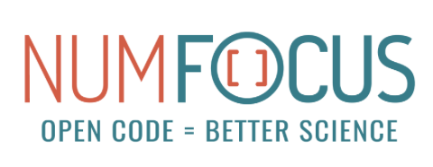

Introduction and Motivation#
Pangeo is a global community initiative for Big Geoscience Data that promotes open, reproducible, and scalable science:
Open Community
Open Platform with deployments that can be customized for every needs and for everyone
Since August 2023, Pangeo is a Numfocus sponsored project.

Important information about Pangeo#
[Code of Conduct](pangeo-data/governance
Key points#
No vendor lock-in, no credits needed;
Easy to start and deployment on laptops, cloud and HPC;
“Reference” deployments on different cloud infrastructures;
Team up with other initiatives. It can help to increase DEI (Diversity, Equity and Inclusion): * Educational material and deliver trainings (Pythia, Galaxy); * Training infrastructure as a Service (Pythia, Galaxy, EOSC); * Use Pangeo from GUI (no programming skills required) on Galaxy Europe.
Contribute to easy creation of data in analysis-ready, cloud optimized (ARCO) format;
Promote the work done by the Pangeo Community and other Geosciences initiatives (Pangeo Show & Tell/Showcase/Pangeo discourse);
Pangeo heavily used in industry;
Spin-off (often from Pangeo community members) and many startups & companies using Pangeo software stack and contributing to Pangeo ecosystem.